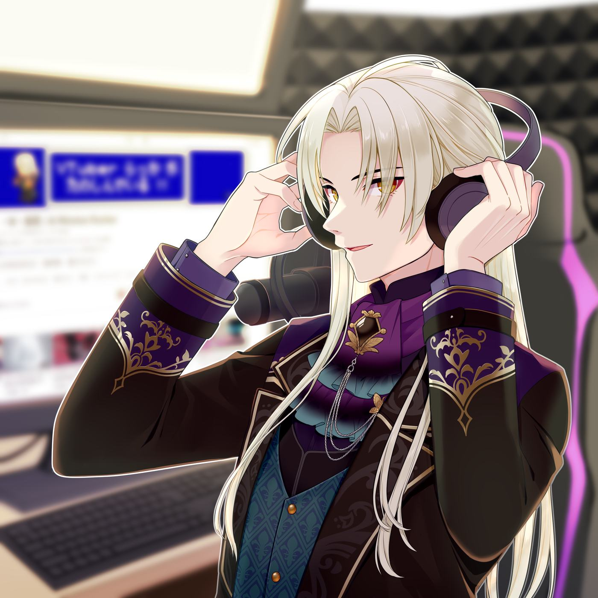
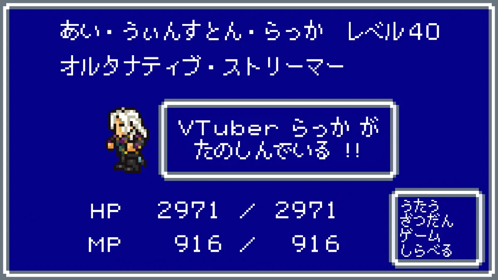
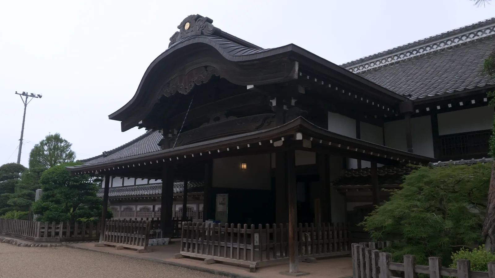
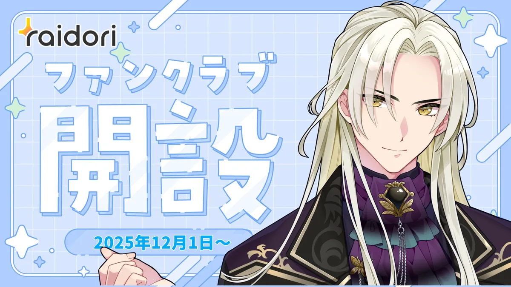

藍・W・楽歌
2026.10.26 — 11.01 ／ WEEKLY SCHEDULE
大人になっても、
遊び足りない。

ILLUSTRATION BY @hori_games25
藍・W・楽歌の楽しみ方
-

-

-

Weekly Schedule
今週の番組表
2026.10.26 — 11.01 ラジオ 歌枠 声劇 ゲーム 旅・Vlog 特番26MON
21:00
AlternativeRadio #33
ラジオ番組
27TUE
20:00
僕らはいつだって青春だ！爽やかロックンロール歌枠／深海から存在を叫ぶミスチル歌枠
28WED
おやすみ
29THU
おやすみ
30FRI
20:00
キャッスルヴァニア ベルモンドカース #3
31SAT
おやすみ
1SUN
未定
- 26MON21:00AlternativeRadio #33
- 27TUE20:00僕らはいつだって青春だ！爽やかロックンロール歌枠／深海から存在を叫ぶミスチル歌枠
- 30FRI20:00キャッスルヴァニア ベルモンドカース #3
- ほかの日28〜29日・31日 おやすみ ／ 1日 未定
変更や追加のお知らせはXで随時更新しています。
Xで最新情報を見る
Programs
ラジオ番組とおすすめ動画
AlternativeRadio
月曜夜の30分ラジオ
毎週月曜 21:00 ／ YouTubeで生放送
雑学、音楽、近況、趣味の話を、藍・W・楽歌がゆるく語るラジオ番組です。お便り、コーナー投稿、番組内CMを番組ページで募集しています。


1,000+
YouTube登録者
ほぼ半々
視聴者の男女比
46
主催イベント最大同時接続
登録者数は2026年5月に1,000人を達成。男女比はYouTubeアナリティクス2026年8月29日時点（男性51.6%、女性48.4%）。同時接続46名は2025年7月に主催した声劇イベントの実績です。
藍・W・楽歌
あい・うぃんすとん・らっか
歌とお芝居、ゲーム、旅、歴史・地理が好きな男性VTuber。
舞台役者、イベントMC、ラジオDJの経験を活かし、大人の趣味時間をお届けしています。
Contact
お問い合わせ
出演依頼やコラボのご相談は、フォームかX DMでどうぞ。企業・法人の方は お仕事のご相談ページ もご覧ください。
お問い合わせから3営業日以内にご返信します。
Updates